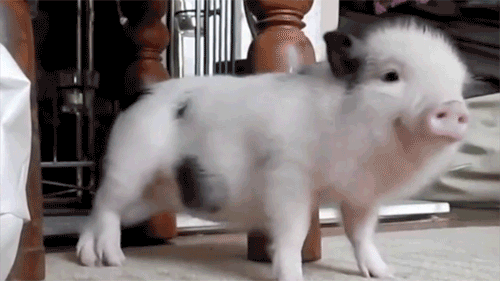

Новая страница
Альтернативный сайт
Список продуктов
Инструкция по приготовлению
- Довести воду до кипения
- Засыпать ингредиенты
- Варить 10 минут
Меню и рецепт
- Гаспачо
- лёгкий холодный суп из перетёртых в пюре свежих овощей
- Том-ям
- кисло-острый суп на основе куриного бульона с креветками, курицей, рыбой или другими морепродуктами
- Борщ
- разновидность супа на основе свёклы, которая придаёт борщу характерный красный цвет
ВЕПРЬ!!!!!!!

Свинохряковепрь!!!